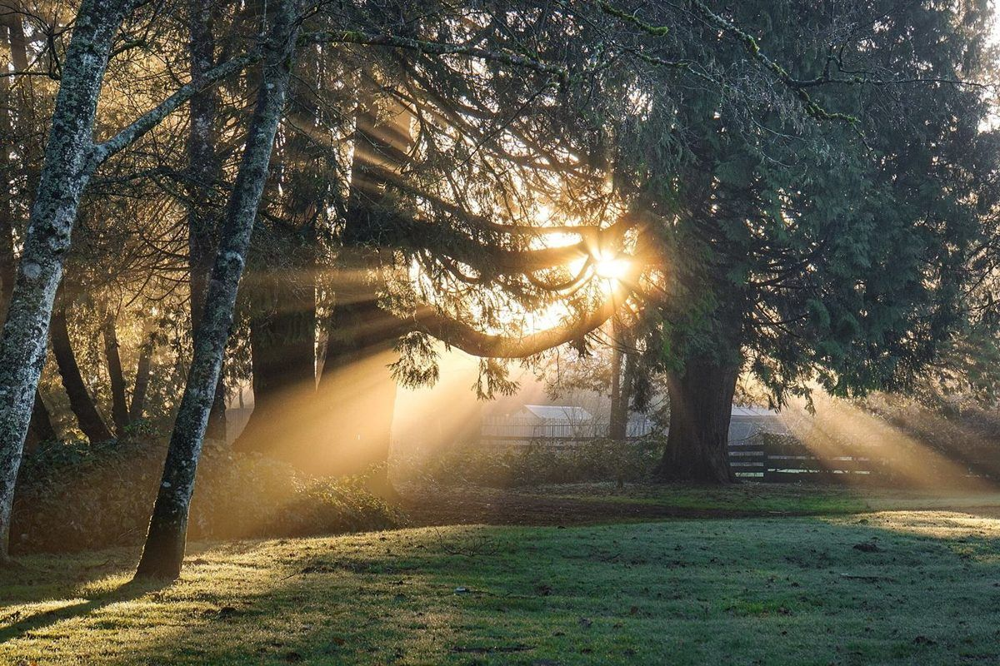

制作側の連想
ジップラインの部位を、配置図にしてみる
このサイトは、斜めに渡したジップラインを図にしたつもりで作りました。六つの部位に番号をふり、上の図と並べています。制作側の連想で、お店の理念・由来とは無関係です。実際の設備の仕様や安全基準を示すものでもありません。
凡例
六つの部位
- 1発着台乗り出す側の、少し高いところに組む足場。
- 2ワイヤーロープ二つの端のあいだに斜めに渡す、走路になる綱。
- 3滑車(トロリー)ワイヤーの上を転がる、小さな車輪のついた部品。
- 4ハーネス滑車から下がる、体を預けるための帯とベルト。
- 5緩衝装置終点の手前で、勢いをやわらげるための部分。
- 6支柱ワイヤーの低い側の端を受け止める柱。
ギャラリー(イメージ)
パンとコーヒーの写真


写真はパンとコーヒーのイメージです。お店のものではなく、お店で提供している商品を示すものでもありません。
ご案内
お店のこと(確認できたものだけ)
| 所在地 | 〒759-4711 山口県長門市油谷後畑２２３７−６ |
|---|---|
| 電話 | 準備中 |
| 営業時間 | 準備中 |
| 定休日 | 準備中 |
| ご予約 | 準備中 |
| 駐車場 | 準備中 |
| SNS | Instagram @jojomiwa |